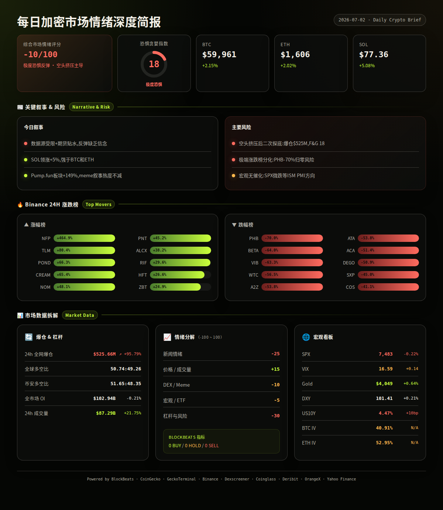
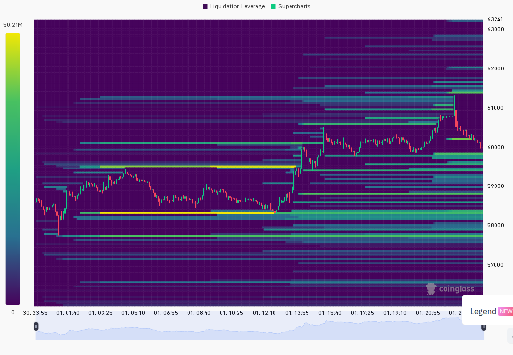
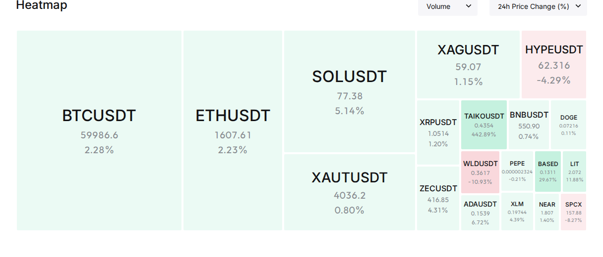

极度恐慌指数18下的空头挤压：BTC重返6万关口，SOL强势领涨超5%，但24h爆仓激增96%暗藏高波动风险
一句话总览：市场仍处于极度恐慌（F&G 18）中，但过去24h出现了明显的空头挤压行情——BTC、ETH、SOL全线反弹，SOL以+5.08%领涨，全市场爆仓金额飙升95.79%至$525.66M；Defi/链上情绪偏冷清，传统市场信号中性偏防御，反弹可持续性存疑 (CoinGecko, Coinglass, analysis)
━━━━━━━━━━━━━━━━━━━━━━
⏰ 1. 24小时变化:
恐惧与贪婪指数 18 / Extreme Fear
BTC $59,961 +2.15%
ETH $1,606 +2.02%
SOL $77.36 +5.08%
VIX 16.59 +0.85% Normal
成交量 $190.96B +21.75%
DXY 101.41 +0.21%
爆仓 $525.66M +95.79%
━━━━━━━━━━━━━━━━━━━━━━
—— BTC / ETH / SOL ——
主流币集体反弹，SOL领涨，但期货溢价转负、资金费率仅微正，显示反弹更多来自空头平仓而非主动做多。
信息 1：BTC过去24h从$58,538低点反弹至$60,816高点后回落至$59,961收盘，呈冲高回落形态，$60,800附近存在明显压力 (Binance)
信息 2：ETH同步反弹+2.02%至$1,606，24h高低区间$1,570-$1,632，反弹幅度弱于BTC和SOL (Binance)
信息 3：SOL领涨三大主流币+5.08%至$77.36，24h高低区间$73.95-$78.42，但$78上方同样遭遇抛压 (Binance)
信息 4：BTC期货溢价率-0.04%、ETH -0.048%、SOL -0.051%，三者全线处于微幅贴水状态——期货市场对此轮反弹缺乏信念 (Binance FAPI)
信息 5：BTC资金费率0.008%、ETH 0.002%、SOL 0.003%，均处于极低水平，多头尚未主动加仓 (Binance FAPI)
信息 6：BTC市值占比55.7%，SOL的上涨并未带动整体山寨行情，山寨季条件仍不具备 (CoinGecko)
—— 宏观 / 地缘政治 ——
传统市场信号中性偏防御：美股微跌、黄金上涨、美债收益率上行，风险偏好未见显著回升。
信息 7：S&P 500收于7,483点，24h微跌-0.22%，整体风险偏好平淡 (Yahoo Finance)
信息 8：黄金收于$4,049/oz，24h上涨+0.64%——黄金与BTC同时上涨，表明当前并非典型的risk-on共振，更接近各自独立逻辑驱动 (Yahoo Finance)
信息 9：美元指数DXY报101.41，24h微涨+0.21%，走势平稳 (Yahoo Finance)
信息 10：美国10年期国债收益率24h上行约10bp至4.47%，短端利率预期小幅收紧 (Yahoo Finance)
—— AI / 半导体叙事 ——
AI/Agent叙事在X KOL讨论中维持13%占比（69条），但缺乏爆炸性新故事驱动，更多是延续性讨论。
信息 11：X list中AI/Agent讨论量69条，占总量13%，仅次于CRYPTO市场（107条/20%）和其他未分类内容。没有出现新的AI叙事引爆点 (X Lists, analysis)
信息 12：CoinGecko trending中GRASS、TAIKO等基建类项目进入前15，但更多是市值排名驱动而非AI叙事驱动 (CoinGecko)
—— 值得关注的标的 ——
Binance 涨幅榜 (USDT):
· NFP +464.9%
· TLM +80.4%
· POND +66.3%
· CREAM +65.4%
· NOM +48.1%
· PNT +45.2%
· ALCX +38.2%
· RIF +29.6%
· HFT +26.6%
· ZBT +24.9%
跌幅榜:
· PHB -70.0%
· BETA -64.0%
· VIB -63.3%
· WTC -56.5%
· A2Z -53.8%
· ATA -53.8%
· ACA -51.4%
· DEGO -50.9%
· SXP -45.0%
· COS -41.1%
涨幅榜与跌幅榜均出现极端波动：NFP +465%可能为特殊事件驱动（如代币经济变更/空投/上币），而PHB -70%、BETA -64%等币种接近归零式下跌，推测与做市商退出或下架风险相关 (Binance, analysis)
—— X/Twitter KOL 信号 ——
信息 13：过去24h监控3个X List共527条推文（采集耗时269s，全部成功），KOL圈讨论活跃度处于正常水平。主要代币提及集中在$PEACE（4次/2人）、$JOE（3次/3人）和$ANSEM（2次/2人），其中$ANSEM同时出现在CoinGecko trending #5位置，形成多源共振信号 (X Lists, CoinGecko)
信息 14：X叙事分布：其他未分类277条（53%）、CRYPTO市场107条（20%）、AI/Agent 69条（13%）、Meme 15条（3%）。生活/噪音内容占比约54%，实际可用于交易判断的信号密度中等偏低 (X Lists, analysis)
信息 15：高互动推文Top 1为NBA交易新闻（Jaylen Brown ←→ Paul George），属泛流量内容，非加密相关。加密相关高互动来自@WhaleInsider报道Palantir被西班牙列入黑名单，涉及$PLTR但非纯币圈事件 (X Lists)
信息 16：值得跟踪的信号：$SPCX获得2人偏多讨论（Solana链上项目），DEX流动性$1.25B，适合进一步交叉验证价格是否尚未启动、成交量和OI是否未过热 (X Lists, Dexscreener, analysis)
━━━━━━━━━━━━━━━━━━━━━━
风险 1：空头挤压后的二次探底风险
过去24h爆仓飙升95.79%至$525.66M，这在当前极度恐慌环境（F&G 18）中更可能是空头集中平仓驱动，而非新多头入场。期货全线贴水、资金费率极低也印证了这一判断。历史类似结构中，挤压行情后常见获利了结或二次探底。
观察：BTC能否在$58,500-$59,000区间获得支撑并持续24h以上。
失效条件：BTC放量突破$61,500且资金费率转正、期货溢价恢复 (Coinglass, Binance, analysis)
──────────────────────
风险 2：Binance极端涨跌榜上的代币风险
涨幅榜NFP +465%、跌幅榜PHB -70%、BETA -64%，极端波动暗示部分项目存在做市商退出、流动性枯竭或下架风险。追涨极端涨幅榜项目在极端恐惧市场中胜率极低。
观察：跌幅榜中是否有项目发布澄清公告或团队回应。
失效条件：相关项目发布明确利好公告且成交量恢复、买卖盘口恢复正常深度 (Binance, analysis)
──────────────────────
风险 3：BTC市值占比过高（55.7%）压制山寨季预期
BTC.D维持高位表明资金并未系统性回流山寨币，SOL的单边上涨（+5.08%）可能是独立叙事驱动而非山寨季启动。ETH-BTC IV价差12pp（<15%）也未出现山寨投机溢价信号。
观察：BTC.D是否出现明显下行（跌破55%）且ETH/BTC汇率同步走强。
失效条件：BTC.D连续2日下行+ETH/BTC突破关键阻力+Solana生态DEX成交量同步放大 (CoinGecko, Deribit, analysis)
──────────────────────
风险 4：宏观面缺乏明确利好催化剂
SPX微跌、美债收益率上行10bp、黄金温和上涨——传统市场处于"等消息"状态。在缺乏宏观催化剂的情况下，加密市场可能继续在恐慌情绪中做窄幅震荡，缺乏突破动力。
观察：本周剩余交易日SPX能否站稳7,500、VIX是否回落至16以下。
失效条件：出现超预期的宏观数据（如就业/CPI低于预期）或鸽派央行言论驱动风险偏好回升 (Yahoo Finance, analysis)
──────────────────────
风险 5：数据源受限影响判断完整度
今日多个关键数据源不可用：GeckoTerminal DEX数据（403）和BlockBeats新闻/叙事接口（404），导致链上资金流和新闻叙事分析覆盖不足。DEX活跃度和新池监控仅能依赖Dexscreener单一来源。
观察：GeckoTerminal和BlockBeats服务是否恢复。
失效条件：明日报告前数据源恢复正常，可补充链上资金流和新池数据交叉验证 (analysis)
非财务建议声明: 本报告仅提供市场数据和情绪分析，不构成任何买卖建议。
━━━━━━━━━━━━━━━━━━━━━━
· 7月2日（周三）— 美国ISM制造业PMI — 若低于预期可能强化衰退叙事，利好降息预期但利空风险资产 (analysis)
· 7月3日（周四）— 美国初请失业金 + ADP就业 — 劳动力市场健康状况的关键观察点，影响Fed政策预期 (analysis)
· 7月4日（周五）— 美国独立日假期 — 美股休市，流动性可能偏低，警惕低流动性下的异常波动 (analysis)
━━━━━━━━━━━━━━━━━━━━━━
综合评分: -10/100 (极度恐惧中的技术性反弹)
5 个维度:
新闻情绪: -25/100 — 新闻数据源受限（BlockBeats 不可用），X KOL讨论以噪音为主（54%未分类），缺乏重大利好驱动叙事。$ANSEM和$SPCX的KOL讨论为少有的积极信号但尚未形成共识 (X Lists, analysis)
价格/成交量: +15/100 — BTC/ETH/SOL全线反弹，成交量放大+21.75%，短期动能偏积极。但期货全线贴水显示市场对反弹缺乏信念，冲高回落形态也表明上方压力显著 (Binance, Coinglass, analysis)
DEX/meme 活跃度: -10/100 — GeckoTerminal数据不可用，Pump.fun Creator板块市值+148.6%显示meme发射热度高，但整体DEX信号缺失影响判断完整度 (CoinGecko, Dexscreener, analysis)
宏观/ETF/流动性: -5/100 — SPX微跌、黄金上涨、美债收益率上行、美元平稳——传统市场处于中性偏防御状态，未给加密提供明确的risk-on顺风 (Yahoo Finance, analysis)
杠杆与风险: -30/100 — 爆仓$525.66M（+95.79%）、F&G 18极度恐惧、OI微降-0.21%、长空比接近平衡（50.74:49.26）。高爆仓量虽体现空头挤压，但也意味着杠杆参与者损失惨重，后续投机意愿可能下降 (Coinglass, analysis)


以下为基于多源数据交叉验证的概率情景分析：
情景 1 (概率: 45%, 置信度: 高):
空头挤压后的二次探底 — BTC在$58,500-$60,800区间震荡后回吐涨幅，重新测试$57,000-$58,000支撑区。因为期货全线贴水（-0.04%至-0.05%）和资金费率极低（<0.01%）表明空头回补是反弹主力而非新多入场，推动力缺乏持续性。
关键条件: BTC跌破$58,500且4h K线确认
若发生则BTC目标$56,000-$58,000，ETH目标$1,520-$1,560，SOL更敏感可能回踩$72-$74 (multi-source, analysis)
情景 2 (概率: 35%, 置信度: 中):
恐慌修复式横盘 — BTC在$58,000-$62,000区间继续整理，F&G缓慢从18回升至25-30，成交量回落至均值。市场进入"等待催化剂"状态，直至下周宏观数据或加密原生事件提供方向。
关键条件: 未来48h无重大利空新闻+成交量逐步萎缩
若发生则BTC在$58,000-$62,000、ETH在$1,550-$1,650、SOL在$73-$80区间内震荡 (multi-source, analysis)
情景 3 (概率: 20%, 置信度: 低):
空头挤压延续+山寨轮动启动 — SOL的强势（+5.08%）成为山寨季先行信号，BTC.D从55.7%跌破55%，ETH/BTC汇率反转，$ANSEM和$SPCX等X热度币种出现成交量爆发和资金持续流入。
关键条件: BTC放量突破$61,500 + BTC.D跌破55% + SOL链上DEX成交量日环比翻倍
若发生则BTC目标$63,000-$65,000，SOL目标$82-$88，山寨市值整体跑赢BTC (multi-source, analysis)
━━━━━━━━━━━━━━━━━━━━━━
· BTC: $59,961, 24h +2.15%, 成交量$21.7B, 高低区间$58,538-$60,816。价格在$58,500获得支撑后反弹至$60,800受阻回落，呈典型的小时级冲高回落形态，$60,800-$61,500为近期密集成交压力区 (Binance)
· ETH: $1,606, 24h +2.02%, 成交量$9.8B, 高低区间$1,570-$1,632。ETH反弹强度弱于BTC，ETH/BTC汇率继续走低，$1,630-$1,650为压力区 (Binance)
· SOL: $77.36, 24h +5.08%, 成交量$3.2B, 高低区间$73.95-$78.42。SOL是三大主流中唯一突破24h高点的币种，但$78-$80压力同样明显 (Binance)
· 全球总市值: $2.16万亿 (CoinGecko)
· 爆仓数据: 24h全市场爆仓$525.66M（+95.79%），其中多头爆仓占约50.7%，空头占49.3%，属双向爆仓但空头略多，与挤压行情特征一致 (Coinglass)
· OI 与成交量: 全市场OI $102.94B（-0.21%，基本持平），24h合约成交量$190.96B（+21.75%，显著放量）。OI未随价格增长说明新仓位开设意愿低，反弹更多来自存量平仓 (Coinglass)
· 全球多空比: 50.74:49.26（GLOBAL），Binance TV账户多空比51.65:48.35 — 两者均接近平衡，偏向性信号不强 (Coinglass)
· 宏观看板: SPX 7,483 (-0.22%) / VIX 16.59 (Normal) / DXY 101.41 (+0.21%) / US10Y 4.47% (+10bp) / Gold $4,049 (+0.64%) — 传统市场处于中性偏防御，黄金与BTC同涨表明两者更多受各自独立因素驱动，而非系统性risk-on (Yahoo Finance)
· 期权波动率: Deribit BTC ATM IV 40.91% (Normal)，ETH ATM IV 52.95% (Normal)。ETH-BTC IV价差12.04pp (<15%)，未出现山寨投机溢价信号，印证当前反弹缺乏FOMO驱动 (Deribit)
以下基于 CoinGecko trending + Dexscreener 数据交叉验证。注意：GeckoTerminal今日不可用，DEX新池和资金流数据仅能依赖Dexscreener单一来源，覆盖度有限。
ANSEM (Solana):
约$0.090, 24h +0.08%, 市值$1,200M+。
DEX: 流动性$45.1M, 24h成交量未明确, 交易对活跃度一般。
催化剂: 同时出现在X KOL讨论（2次/2人）和CoinGecko trending #5，形成多源共振。ANSEM为知名KOL/交易员品牌代币，社群基础较强。
风险: 流动性主要来自单个DEX，价格24h无实质变化，热度可能仅是社交媒体曝光效应而非真实资金流入 (CoinGecko, Dexscreener, X Lists)
NFP (Binance Smart Chain):
约$0.00038, 24h +465%, 市值约$50M。
DEX: 流动性$50.3M, DEX数据异常（24h变化为None，可能刚经历合约升级或迁移）。
催化剂: Binance涨幅榜第一（+464.9%），但Dexscreener未能返回有效24h价格变化——高度疑似代币合约变更、重新上线或重大经济模型调整。
风险: 极端涨幅+数据缺失=极高风险。追涨此类项目在恐慌市场中历史上胜率极低 (Binance, Dexscreener, analysis)
PUMP (Solana):
约$0.00153, 市值约$400M。
DEX: 流动性$400.3M, 交易深度充裕。
催化剂: CoinGecko Pump.fun Creator板块24h市值上涨+148.6%，meme币发射平台生态持续活跃。
风险: meme发射平台代币本身与所发射meme币的关联度存疑，热度可持续性难以判断 (CoinGecko, Dexscreener)
━━━━━━━━━━━━━━━━━━━━━━
· GeckoTerminal Solana trending pools: 今日数据不可用，Solana链上DEX实时资金流数据缺失。
· 备注:
- 今日多个数据源受限（BlockBeats 404, GeckoTerminal 403），报告链上资金流和新闻叙事覆盖度较正常日偏低。建议在数据源恢复后进行补充交叉验证。
- CoinGecko板块市值涨幅前三为Pump.fun Creator (+148.6%)、Commodities Meme (+35.1%)、Printr Launchpad (+35.0%)——meme/发射台叙事仍然主导山寨热度，但跌幅榜OpenServ Ecosystem (-37.9%)、Tower Defense Games (-38.6%)提示热门叙事轮动极快。
- Binance极端涨跌榜（涨幅NFP +465% vs 跌幅PHB -70%）暗示当前市场处于高风险分化状态，部分项目存在结构性退出风险，选币需极度谨慎。
- 爆仓量$525.66M为近期相对高位，配合F&G 18极度恐惧和期货贴水，整体市场杠杆压力仍大，任何方向性突破都可能触发二次爆仓潮。